Goodiez — Collector Marketplace App
Goodiez
수집용 콘솔 게임을 사고, 팔고, 모으는 컬렉터 마켓 앱. 디자인 없이 먼저 출시된 서비스에 합류해, 거래의 모든 단계를 ‘가격’과 ‘신뢰’ 두 가지 언어로 다시 설계했습니다.
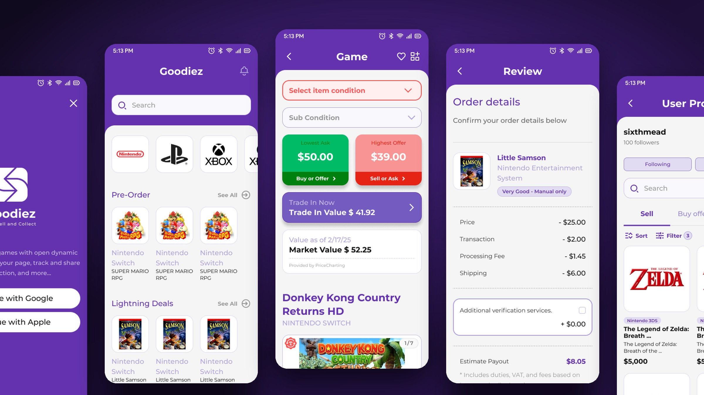
01 — Overview
출시는 이미 끝나 있었다. 남은 일은 움직이는 서비스를 멈추지 않고, 거래의 모든 순간에 신뢰를 설계하는 것이었습니다.
Context
해외 비디오게임 시장의 투자유치 시즌에 맞춰 상품 데이터베이스를 먼저 확보해야 했고, 그래서 앱은 디자인 과정 없이 개발 · 출시되었습니다. 화면마다 기준이 달라 디자인과 개발 사이의 해석 차이가 반복 수정으로 이어지던 상태였습니다.
My Part
기존 화면을 전수 점검해 IA와 User Flow를 다시 세우고, 홈 · 검색 · 상품 상세 · Ask/Bid 거래 · 정산 · 프로필까지 160개 이상의 화면을 단독으로 디자인했습니다. 13개 보드의 가이드라인과 다크 모드까지 정리해 개발이 기준을 보고 만들 수 있게 했습니다.
02 — Problem → Answer
시장의 세 가지 불안을
화면의 장치로.
컬렉터 거래 시장의 문제는 기능이 없어서가 아니라, 믿을 근거가 화면에 보이지 않아서였습니다. 그래서 서비스 목표를 그대로 기능 목록으로 옮기지 않고, 각각을 사용자가 눈으로 확인할 수 있는 UI 요소 하나로 대응시켰습니다.
-
01 · Trust구매자와 판매자 모두를 보호할 장치가 없다
결제 직전에 Verification(검수) 옵트인 단계를 두고, 검수 비용을 정산표에 한 줄로 드러냈습니다. 판매 이후엔 배송 상태 · 구매자 · 송장 번호를 한 화면에 묶어 거래가 끝날 때까지 추적되게 했습니다.
-
02 · Pricing아이템이 과대평가되고, 판매자는 가격을 정하기 어렵다
상품 상세 최상단에 Lowest Ask · Highest Offer · Market Value 세 개의 가격 신호를 고정했습니다. 가격 입력 필드 바로 아래에도 최고 입찰가 / 최저 판매가를 함께 보여, 숫자를 넣는 순간 시세와 비교되게 했습니다.
-
03 · Fragmented수집 · 거래가 여러 곳에 흩어져 있다
홈 · 리스트 · Trade-In · 마이페이지 · 메뉴의 5탭 구조로 구매 · 판매 · 보상판매 · 컬렉션을 한 앱 안에 정리하고, 사용자 프로필을 Sell / Buy offer / Collection 탭으로 나눠 ‘나의 컬렉션’이 곧 ‘나의 상점’이 되게 했습니다.
03 — Core Loop
검색에서 송장까지,
끊기지 않는 한 줄.
러프 설계에서 빠져 있던 예외 상황과 화면 간 연결을 채우는 것이 첫 작업이었습니다. 사용자와 관리자 두 관점의 시나리오로 프로토타입을 돌려 끊기는 지점을 찾았고, 모든 거래가 아래의 한 흐름 위에 놓이도록 IA를 다시 짰습니다.
- 01Search
- 02Game
- 03Condition
- 04Ask · Bid
- 05Verification
- 06Review
- 07Confirm
- 08Tracking
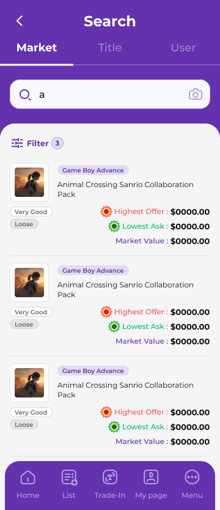
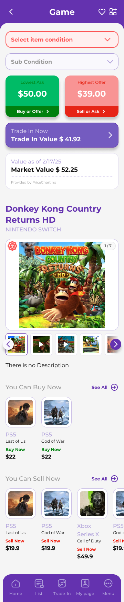
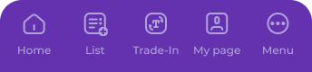
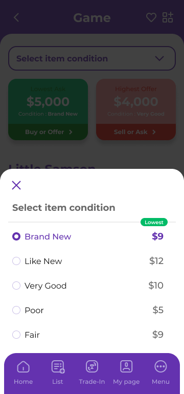
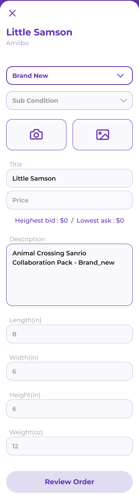
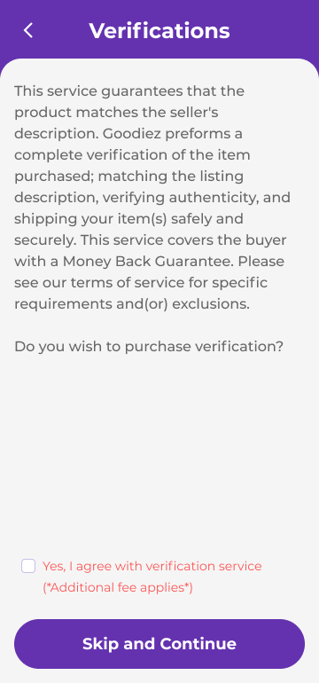
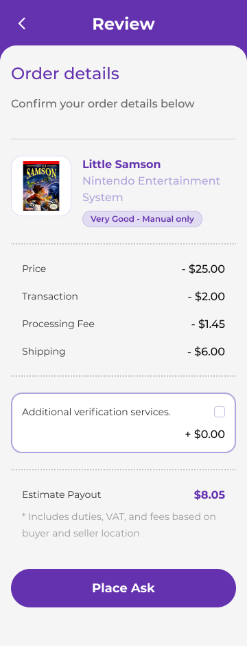
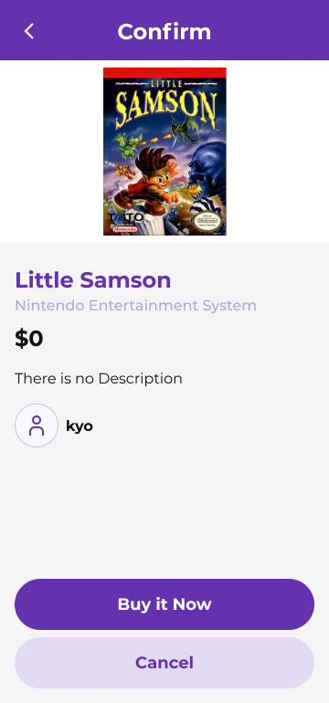
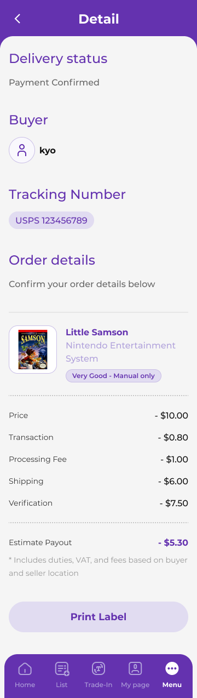
04 — Home
진열대는
거래 의도로 나눴습니다.
홈은 장르나 신작 순이 아니라 ‘지금 무엇을 하려는가’로 선반을 나눴습니다. 사고 싶은 사람에게는 Buy Now & Make an Offer, 팔고 싶은 사람에게는 Sell Now & Ask. 같은 상품 카드를 쓰되 하단의 행동 라벨과 가격 색만 초록(구매) · 빨강(판매)으로 바꿔, 스크롤만으로 의도를 구분하게 했습니다.
- A상단 플랫폼 로고 타일로 Nintendo · PlayStation · Xbox 진입을 한 번에
- B판매자를 원형 아바타 선반으로 분리해 ‘사람’ 단위의 탐색을 열어 둠
- C내 상품은 썸네일에 Mine 배지로 표시해 자기 매물을 바로 구분
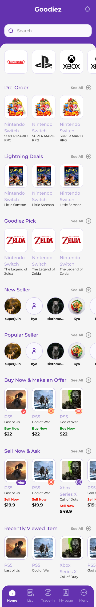
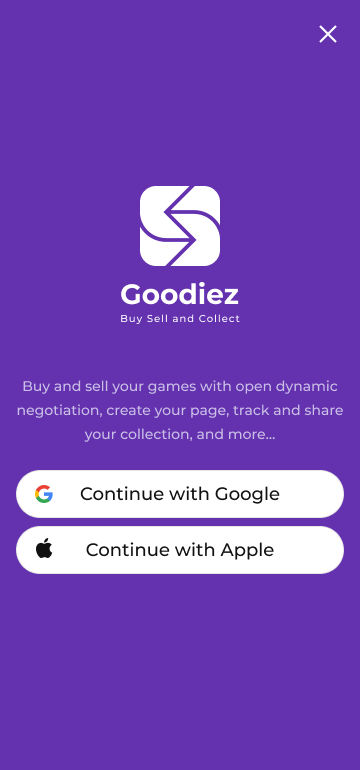
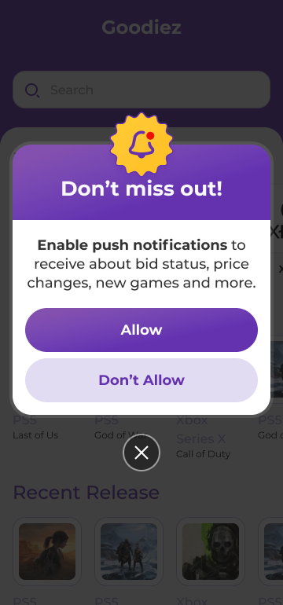
05 — Product Details
가격이 곧
인터페이스.
기존 상세 화면은 버튼과 탭의 위계가 비슷해 무엇이 중요한지 읽히지 않았고, 상품 이미지도 기준 없이 노출돼 신뢰를 떨어뜨렸습니다. 그래서 상품명보다 먼저 최저 판매가와 최고 제안가를 두 장의 카드로 올렸습니다. 카드 자체가 ‘Buy or Offer’, ‘Sell or Ask’ 버튼이라, 가격을 읽는 순간 다음 행동이 정해집니다.
- A상태(Condition)를 고르기 전엔 선택 필드를 빨간 테두리로 강조해 첫 단계를 지정
- B상태 바텀시트는 등급마다 가격을 붙이고 최저가에 Lowest 배지를 달아 비교를 한 화면에서
- CTrade-In 예상가와 외부 시세(PriceCharting) 기준일을 별도 카드로 분리해 출처를 명시
- D상품 이미지는 1:1 흰 타일과 동일한 여백으로 통일, 영상은 썸네일에 재생 아이콘으로 구분
06 — Ask · Bid
파는 폼과 사는 폼,
같은 뼈대로.
판매 등록(Ask)과 구매 제안(Bid)은 상품 헤더 → 상태 선택 → 사진 → 가격 → 설명의 순서를 공유합니다. 한쪽을 익히면 다른 쪽도 바로 쓸 수 있도록요. 필수값이 비면 버튼을 비활성 톤으로 두고, 제출 시점에는 필드 아래 한 줄의 빨간 문구로만 이유를 알려 폼의 리듬을 깨지 않게 했습니다.
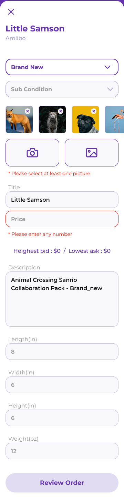
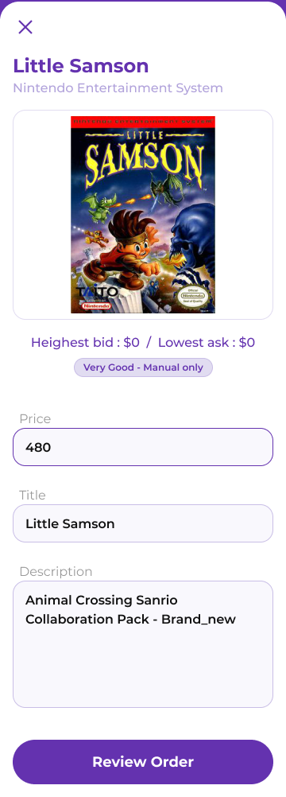
07 — Trust Layer
돈이 오가는 화면은
숨김 없이.
결제와 정산 화면에서는 장식을 덜어 내고 숫자만 남겼습니다. 판매가에서 거래 수수료, 처리 수수료, 배송비, 검수비가 차례로 빠지고 마지막 줄에 바이올렛으로 ‘Estimate Payout’이 남는 구조입니다. 검수는 강제가 아닌 체크박스 옵트인으로 두되, 추가 요금 문구를 같은 줄에 붙여 나중에 놀라지 않게 했습니다.
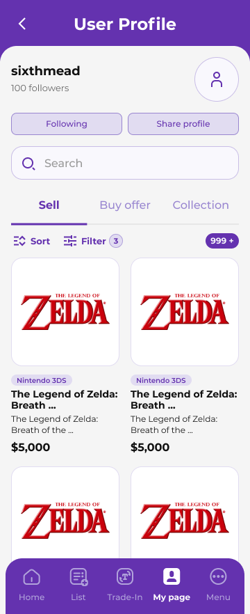
08 — Design System
화면을 고치는 대신,
결정의 기준을.
반복 수정의 원인은 개별 화면이 아니라 ‘기준이 없음’이었습니다. Color · Typography · Grid부터 Button · Card · Select · Tab · Label · Notify · Bottom Bar까지 13개 보드의 가이드를 Figma 변수로 만들어, 디자이너와 개발자가 같은 이름으로 이야기하게 했습니다. 아래 요소는 실제 컴포넌트를 코드로 다시 그린 것입니다.
Color — Violet Scale
- Violet 700#6432AF브랜드 · 주요 행동
- Violet 200#E1DCF1보조 버튼 · 라벨
- Green#29CC6ALowest Ask · Buy
- Red#FC5555Highest Offer · Sell · 오류
- Black#111111본문 텍스트
- Gray 200#F5F5F5앱 배경
Typography — Montserrat
- H3 · 32/48
Goodiez
- H4 · 24/32
Donkey Kong Country
- H6 · 16/24
Buy Now & Make an Offer
- P3 · 14/24
Nintendo Entertainment System
- P5 · 12/16
Provided by PriceCharting
Button · Label
Price Card · Bottom Bar
Lowest Ask$50.00
Buy or Offer ›Highest Offer$39.00
Sell or Ask ›Layout
- 360 × 800Base frame
- 16 / 328Margin / Content
- Pill · 16 · 12Button · Field · Tile radius
- 5Tab bar items
09 — Light · Dark
밤에 컬렉션을 보는
사람을 위해.
게임 컬렉터의 사용 시간은 저녁 이후에 몰립니다. 다크 모드는 색을 반전하지 않고 바이올렛을 짙은 남보라 배경으로 내려, 브랜드 톤을 유지한 채 상품 이미지가 가장 밝게 보이도록 했습니다. 흰 상품 타일과 초록 · 빨강 가격 색은 두 테마에서 그대로 두어 거래 신호가 바뀌지 않게 했습니다.
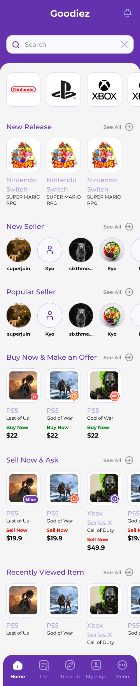
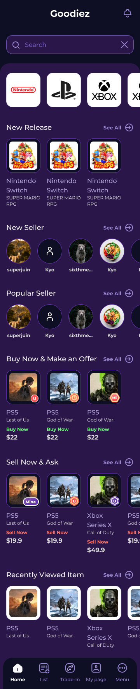
10 — Outcome
-
160+
Screens
홈부터 거래 · 정산 · 프로필까지, 기본 화면과 오류 · 빈 화면 · 팝업 상태를 360 기준 하나의 그리드 위에서 완성했습니다.
-
13boards
Guidelines
Figma 변수로 묶은 13개 가이드 보드가 디자인 · 개발 간 해석 차이를 줄이고, 이후 Trade-In 같은 신규 기능도 조합만으로 확장되게 했습니다.
-
2themes
Light · Dark
같은 토큰 위에서 라이트 · 다크 두 테마를 운영해, 거래 신호 색은 그대로 두고 배경 톤만 바꾸는 구조를 만들었습니다.